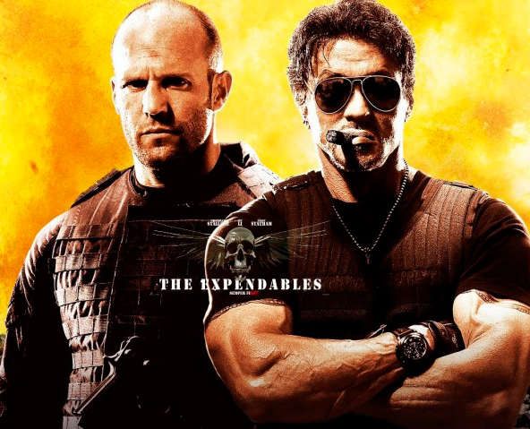

About my friend and certenly about myself
Hello! And let's talt about my friend and certenly about myself.
I'm still developing my English skills, but that doesn't hold back my passion for web development. On this slide, you'll see some of my recent projects built with HTML and CSS.While English may not be my first language, I'm constantly learning and striving to communicate effectively. I believe my dedication to learning, combined with my technical skills, makes me a valuable asset to any team.
The first project showcases my understanding of complex CSS concepts, using "display-wrap" with the value "wrap." I'm particularly proud of this because it demonstrates my ability to put theory into practice. I'm always eager for new challenges to help me grow as a developer.
The second project highlights my CSS layout skills. Here, we used "justify-content" with "flex-end" and "flex-start" for a different layout approach. Every project is a chance to learn and expand my skillset.
The third image is a sneak peek of a website we're currently building. I'm excited to contribute my skills to creating a beautiful and functional website, while also collaborating with others and learning from their experiences.
Thank you for your time and consideration! I may be refining my English, but my passion for development is loud and clear.
Hello! And let's talt about my friend and certenly about myself.
I'm still developing my English skills, but that doesn't hold back my passion for web development. On this slide, you'll see some of my recent projects built with HTML and CSS.
